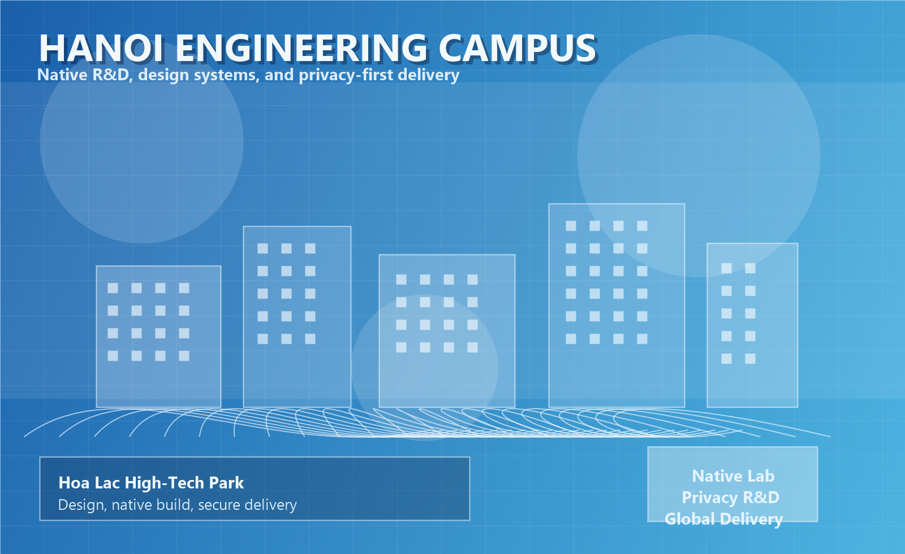

Privacy as a Non-Negotiable Baseline
We uphold one strict principle: data sovereignty belongs to users. We avoid unnecessary network calls, tracking behavior, and cloud dependency. Sensitive data stays controlled by the user device.
We never chase noisy feature counts. We refine core capabilities until they become precise, efficient, and comfortable. Our culture is built on user respect, disciplined execution, and long-term product quality.
We uphold one strict principle: data sovereignty belongs to users. We avoid unnecessary network calls, tracking behavior, and cloud dependency. Sensitive data stays controlled by the user device.
We combine glass-like and neo-morphic visual language with platform-native norms. Every visual decision is tied to practical readability, decision speed, and interaction comfort.
We continuously polish performance and interaction details through user feedback loops. Product quality is not a milestone, but a repeated cycle of learning and refinement.

We believe usability is a form of respect. We do not ship confusing interfaces, fake complexity, or manipulative growth patterns. We design for long-term trust and cognitive comfort.
We document assumptions, test critical paths, and isolate modules for maintainability. Security and privacy controls are implemented as architecture decisions, not late-stage patches.
We communicate clearly, surface risks early, and iterate with accountability. Internal and external collaboration is based on transparent scope, explicit quality criteria, and measurable outcomes.
We remain committed to building tools that help people live with more order, focus, and peace of mind. We optimize details that seem small but shape daily quality of life: response speed, visual clarity, frictionless interaction, and meaningful data representation.
Our future direction continues to center on privacy boundaries, design innovation, and practical value. We will keep investing in local tool R&D and deliver products that are secure, elegant, and truly useful for users who care about both efficiency and digital autonomy.